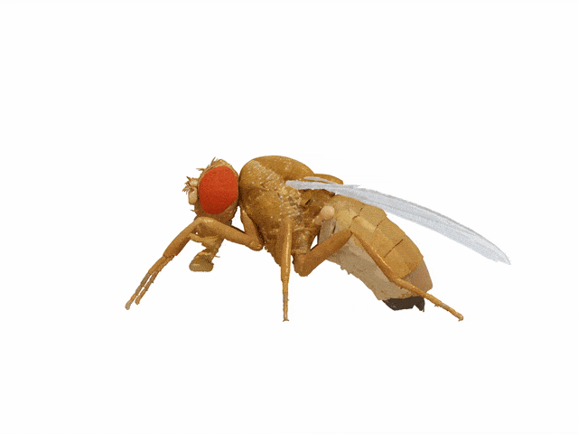

NeuroMechFly¶
Warning
IMPORTANT INFORMATION
This website contains documentation for legacy code related to Lobato-Rios et al, Nature Methods, 2022.
NeuroMechFly has since been updated, and this website is no longer actively maintained.
For most up-to-date information, please visit neuromechfly.org.
NeuroMechFly is a data-driven computational simulation of adult Drosophila melanogaster designed to synthesize rapidly growing experimental datasets and to test theories of neuromechanical behavioral control. For the technical background and details, please refer to our paper.

If you use NeuroMechFly in your research, you can cite us:
@article {Lobato-Rios2021.04.17.440214,
author = {Lobato-Rios, Victor and {\"O}zdil, Pembe Gizem and Ramalingasetty, Shravan Tata and Arreguit, Jonathan and Clerc Rosset, St{\'e}phanie and Knott, Graham and Ijspeert, Auke Jan and Ramdya, Pavan},
title = {NeuroMechFly, a neuromechanical model of adult Drosophila melanogaster},
elocation-id = {2021.04.17.440214},
year = {2021},
doi = {10.1101/2021.04.17.440214},
publisher = {Cold Spring Harbor Laboratory},
URL = {https://www.biorxiv.org/content/early/2021/04/18/2021.04.17.440214},
eprint = {https://www.biorxiv.org/content/early/2021/04/18/2021.04.17.440214.full.pdf},
journal = {bioRxiv}
}